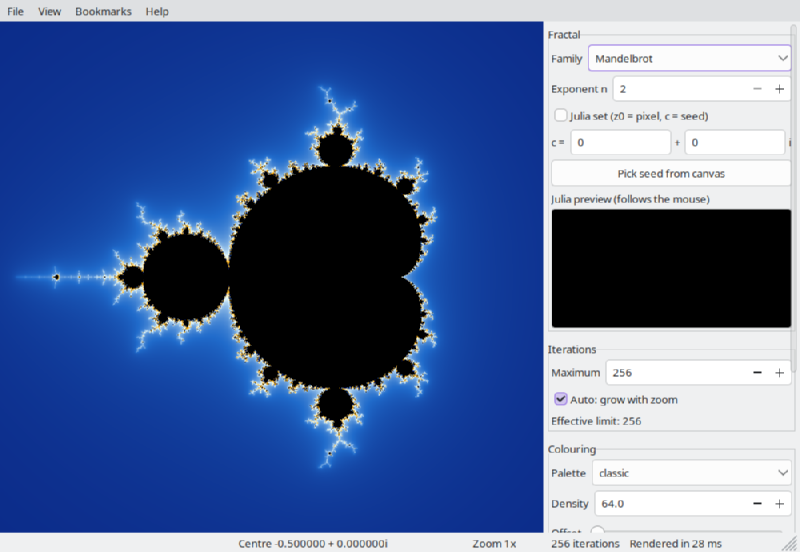
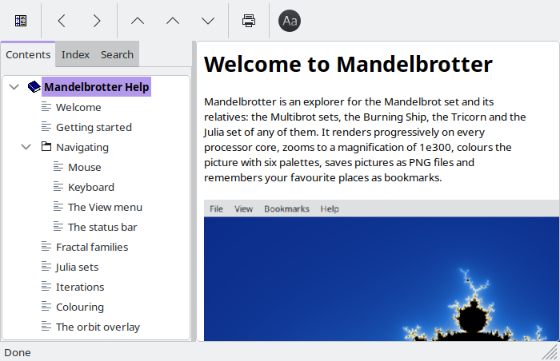

Mandelbrotter is an explorer for the Mandelbrot set and its relatives: the Multibrot sets, the Burning Ship, the Tricorn and the Julia set of any of them. It renders progressively on every processor core, zooms to a magnification of 1e300, colours the picture with six palettes, saves pictures as PNG files and remembers your favourite places as bookmarks.

The window has three parts:

The Contents tab on the left lists every page, the Index tab looks terms up and the Search tab finds any word in the guide. The toolbar has Back and Forward buttons. F1 in the main window opens the page for whatever has the keyboard focus, and Help > Keyboard and mouse reference opens the shortcut table.
Links that begin with Try it do not open a page: they act on the main window, so you can read about a feature and see it at the same time. Put the help window beside the main window rather than on top of it. Help > Back to where I was returns to the view you had before the last Try it link or demo.
Try it: jump into Seahorse Valley